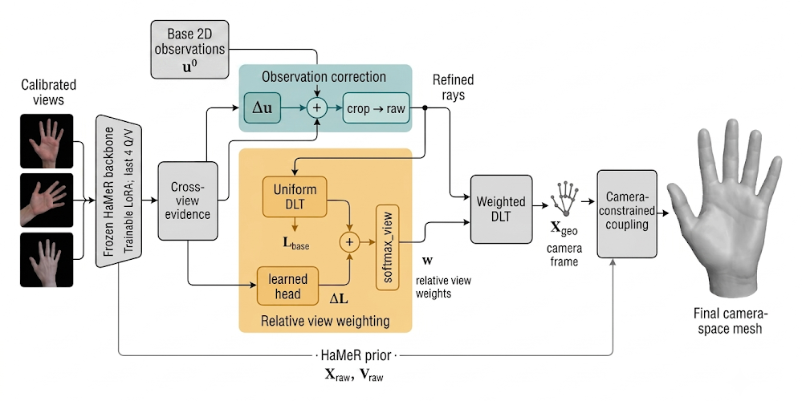
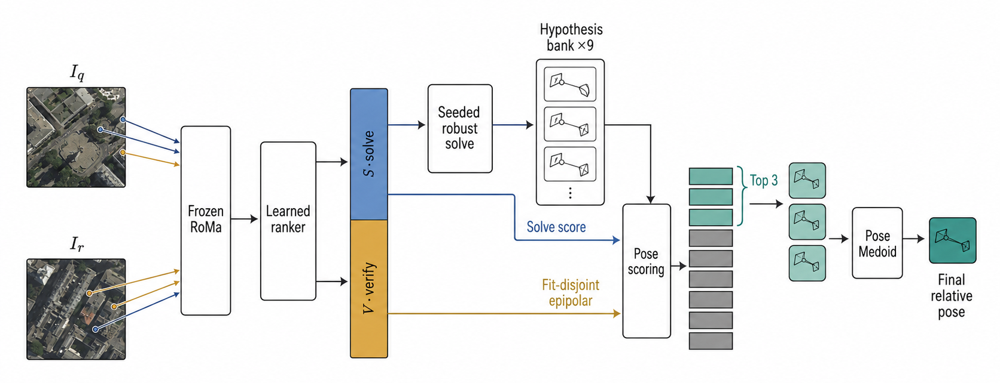
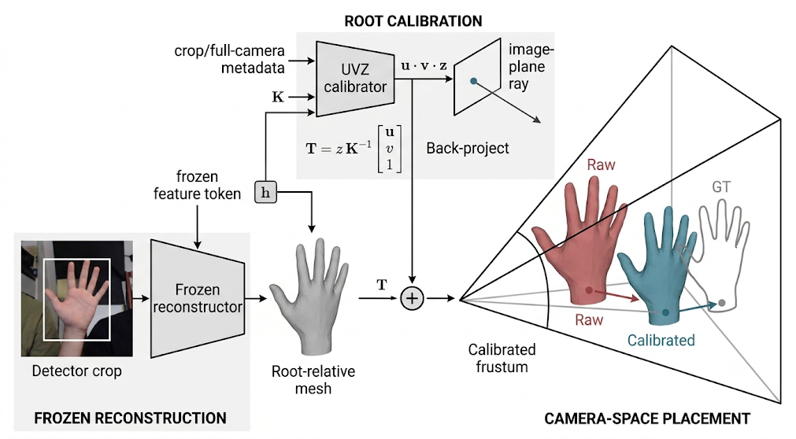
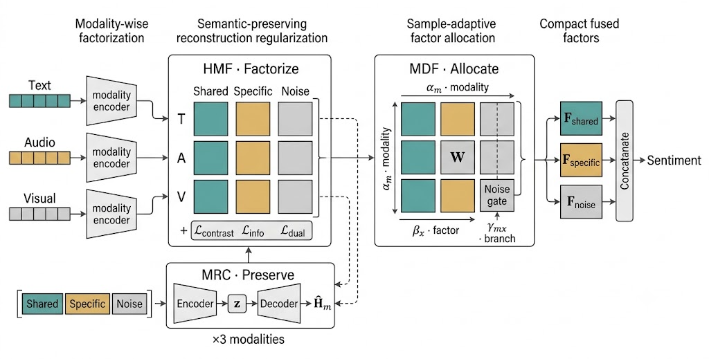

About Me
I am currently completing an MSc in Environmental Data Science and Machine Learning
in the Department of Earth Science and Engineering at Imperial College London.
My research focuses on reliable 3D vision, multi-view geometry, and spatial intelligence.
I am interested in geometry-grounded learning systems that recover metric 3D structure
from imperfect observations, resolve ambiguity through geometric reasoning and verification,
and generalize across viewpoints, scales, and sensing conditions.
I am currently seeking a full-time Research Assistant or Research Engineer position
starting in September or October 2026, and I am open to research collaborations in
3D vision, physical AI, and embodied perception.
Research Projects

MetricMVHand: Measurement-First Multi-View Hand Reconstruction
Ongoing research · Multi-view hand reconstruction
A frozen HaMeR backbone with trainable LoRA and cross-view evidence predicts a
bounded 2D residual and relative view-weight logits before explicit weighted DLT.
Metric geometry is then coupled with the HaMeR joint and mesh prior to recover the
final camera-space hand mesh.
DexYCB-MV matched protocol: 4.731 mm MPJPE · 4.742 mm MPVPE.
Figure

Fit-Disjoint Verification for Extreme-View Relative Pose
Ongoing research · Extreme-view two-view geometry
A learned ranker assigns correspondences to disjoint solve and verification roles.
The solve set generates nine pose hypotheses, while fitting-excluded epipolar evidence
contributes to a unified ranking before a top-three Pose Medoid selects one existing candidate.
Positive gains across primary, replication, and Full32 evaluation settings.
Figure

CondDepth: Projective Root Calibration for Camera-Space Hand Recovery
Ongoing research · Camera-space hand recovery
A frozen crop-centric reconstructor supplies the root-relative hand mesh.
A structured UVZ calibrator uses frozen features, crop/full-camera metadata,
and camera intrinsics to recover global camera-space placement without changing articulation.
DexYCB S0: 28.65 mm on the matched primary subset · 30.99 mm on the full population.
Figure

Zhilu Yang, Mingcheng Li
IEEE/CVF Conference on Computer Vision and Pattern Recognition (CVPR), 2026
FUSE-Net decomposes language, audio, and visual representations into shared,
modality-specific, and noise factors. Variational reconstruction preserves
sentiment-relevant semantics, while multi-factor dynamic fusion allocates evidence
at sample, factor, and branch levels.
Paper
/
PDF
/
Figure
Publication
Zhilu Yang, Mingcheng Li.
“Factorize, Reconstruct, Enhance: A Unified Framework for Multimodal Sentiment Analysis.”
IEEE/CVF Conference on Computer Vision and Pattern Recognition (CVPR), 2026.
Paper
/
PDF